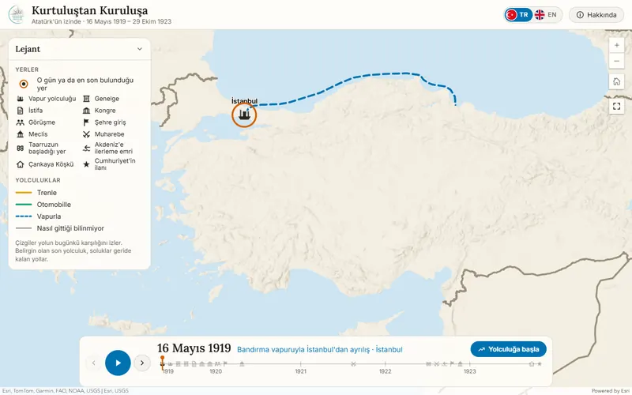

Yayında
Etkileşimli zaman haritası
Kurtuluştan Kuruluşa
Atatürk'ün 16 Mayıs 1919'dan 29 Ekim 1923'e kadar bulunduğu yerleri ve yolculuklarını gün gün izleyen harita.
- Zaman çizelgesiyle oynatılabilen yolculuk anlatımı
- Türkçe ve İngilizce arayüz
- Tren, otomobil ve vapur yolculukları ayrı sembollerle
ArcGIS OnlineYapay zekâ destekli kod